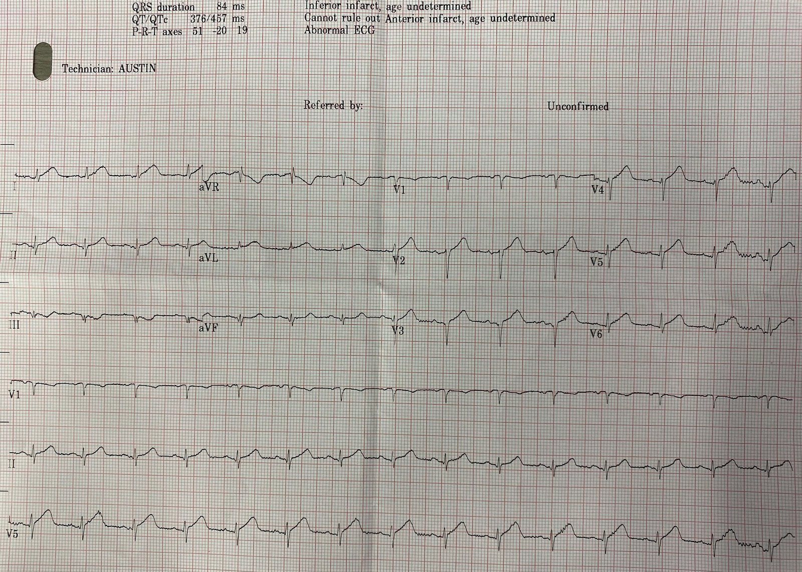
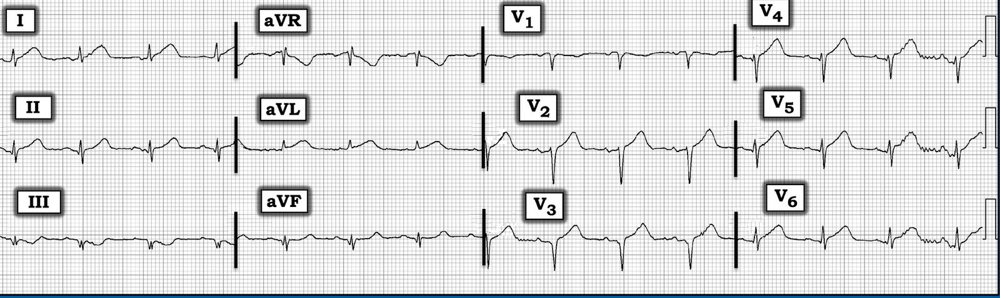
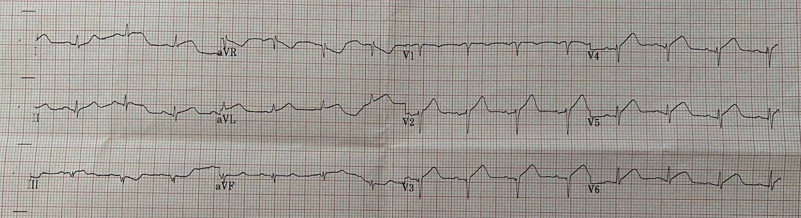
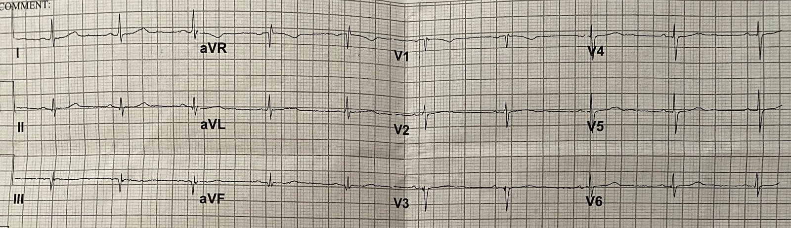
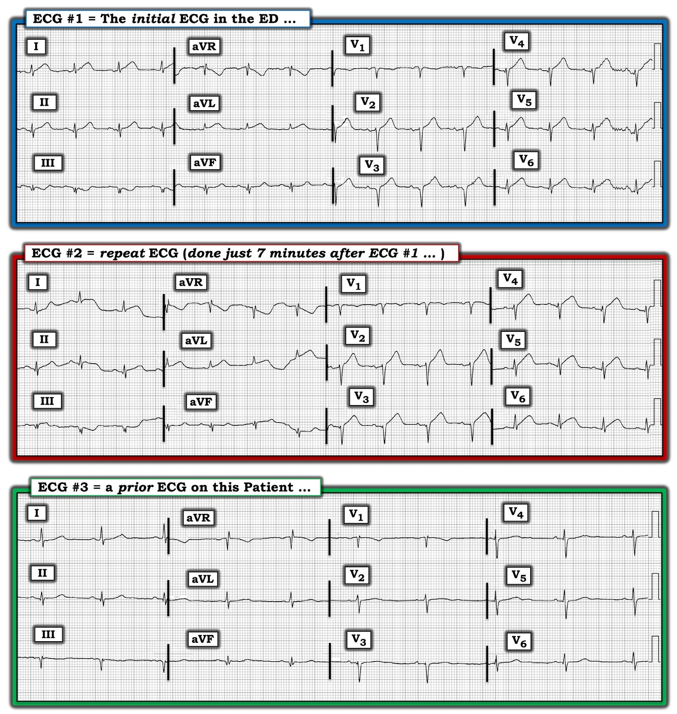

02/01/2023 — Một điện tâm đồ hiển nhiên có giá trị chẩn đoán OMI lại có thể trông hoàn toàn không đặc hiệu với phần lớn người đọc. Đôi lời về AI.
Bản dịch tiếng Việt của bài "An ECG which is obviously diagnostic of OMI can appear wholly non-specific to most interpreters. A comment on AI." – Dr. Smith’s ECG Blog. Giữ nguyên toàn bộ 6 hình ảnh của bản gốc.
Bản này được một cựu bác sĩ nội trú nhắn tin cho tôi, không kèm thông tin gì:


Bạn nghĩ sao?
Ở đây Ken Grauer đã dùng ứng dụng PM Cardio để cải thiện hình ảnh:


Đây là phản hồi tức thì của tôi: “OMI cấp do tắc LAD đoạn gần” Với tôi, điều này hiển nhiên và có giá trị chẩn đoán.
Có sóng T tối cấp ở I, aVL, V2-V6. Các sóng T này rộng, “đầy đặn” (bulky), với diện tích dưới đường cong lớn so với kích thước QRS.
Hơn nữa, có sóng QS ở V3 và qrS ở V4, cả hai đều có giá trị chẩn đoán nhồi máu cơ tim tại một thời điểm nào đó (trong quá khứ hoặc hiện tại). Chúng tôi đã chứng minh ở đây và đã thẩm định ở đây rằng nhồi máu cơ tim cũ có sóng T tương đối nhỏ (về biên độ). Trong tình huống này (có sóng QS), tỷ lệ T/QRS ＞0.36 ở bất kỳ chuyển đạo nào từ V1-V4 có độ đặc hiệu cao cho nhồi máu cơ tim CẤP.
Sau đó, cựu bác sĩ nội trú này viết: “Tất cả đồng nghiệp của tôi đều kinh ngạc khi tôi chẩn đoán ngay lập tức ca OMI khá hiển nhiên này. Tôi không thấy nó tinh tế chút nào, nhưng họ đều bảo là có.”
Với cựu bác sĩ nội trú của tôi, điện tâm đồ này cũng hiển nhiên và có giá trị chẩn đoán.
Anh ấy lập tức kích hoạt phòng thông tim (cath lab).
Tôi ước gì mình biết được có bao nhiêu bác sĩ lâm sàng sẽ nhận ra điện tâm đồ có giá trị chẩn đoán này, và bao nhiêu người sẽ không.
Rồi vì biết có tắc LAD, anh ấy nghi ngờ rằng có thể có tiến triển, nên đã ghi bản này 7 phút sau:


Bản này cho thấy tiến triển rõ ràng. Nhưng mặc dù ghi các điện tâm đồ liên tiếp luôn là ý hay, chúng không phải lúc nào cũng cho thấy tiến triển, và khi có thì không phải lúc nào cũng nhanh như thế này. Vì vậy, đừng để việc không có tiến triển ngăn bạn kích hoạt phòng thông tim ngay từ điện tâm đồ đầu tiên.
Anh ấy cũng tìm được bản cũ này:


Sau đó, anh ấy cung cấp thông tin sau: Một phụ nữ 60 mấy tuổi có tiền sử nhồi máu cơ tim và PCI, khó chịu ở ngực đã 3 giờ.
Troponin độ nhạy cao (hs troponin) ban đầu là 53 ng/L. Giá trị troponin này khiến chẩn đoán nhồi máu cơ tim cấp gần như chắc chắn, nhưng troponin này hoàn toàn không cho bạn biết đó là OMI hay nhồi máu cơ tim không do tắc (NOMI). Chỉ có điện tâm đồ mới cho bạn biết là OMI hay không phải OMI. (Rõ ràng đây không phải STEMI, và do đó là nhồi máu cơ tim không ST chênh lên (Non-STEMI hay NSTEMI).)
Chụp mạch vành xác nhận OMI do tắc LAD và có huyết khối.
Điều này cho thấy thuật ngữ Non-STEMI là vô dụng, vì Non-STEMI có thể là OMI hoặc NOMI.
Mặt khác, troponin dương tính như vậy kèm đau ngực đang tiếp diễn, ngay cả khi không có bất kỳ dấu hiệu điện tâm đồ nào của nhồi máu cơ tim cấp hay OMI, vẫn là chỉ định đưa vào phòng thông tim.
Thật đáng chú ý là một số người đọc có thể thấy điện tâm đồ này Hiển nhiên và Có giá trị chẩn đoán, trong khi những người khác hoàn toàn không thấy gì.
Đây là lý do tôi thường nói rằng “Không phải điện tâm đồ thiếu đặc hiệu; mà là người đọc thiếu đặc hiệu”
Điện tâm đồ chứa một lượng thông tin khổng lồ mà nhiều người không nhìn thấy. Có lẽ phần lớn thông tin đó không được BẤT KỲ ai nhìn thấy. Chúng tôi hy vọng trí tuệ nhân tạo sẽ tìm ra những khía cạnh của điện tâm đồ là manh mối cho OMI mà chúng ta thậm chí chưa bao giờ ngờ tới. Đó có thể là bất cứ điều gì, từ hình thái QRSTU đến tính không đều của nhịp, bao gồm độ biến thiên từ nhát này sang nhát khác, khoảng QT, hay bất cứ điều gì khác.
Thậm chí có thể phát hiện ra rằng điện tâm đồ một chuyển đạo chứa thông tin về OMI mà chúng ta chưa từng ngờ tới. Các thiết bị đeo như Apple watch một ngày nào đó có thể chẩn đoán được OMI.
Điều cần thiết là đưa vào các thuật toán AI một số lượng khổng lồ bản ghi có kết cục kiểm chứng được. Vế sau mới là phần khó: rất khó xác định, ngay cả khi nhìn lại, tình trạng của động mạch tại thời điểm ghi bản điện tâm đồ.

==================================
BÌNH LUẬN CỦA TÔI, bởi KEN GRAUER, MD (2/1/2023):
==================================
Tôi thích ca hôm nay — vì câu trả lời dứt khoát có được chỉ trong vài giây. Ở một bệnh nhân có triệu chứng mới — không nên có chút nghi ngờ nào từ bản ghi ban đầu rằng phòng thông tim cần được kích hoạt ngay lập tức.
- Để rõ ràng và dễ so sánh, trong Hình 1 — tôi đã đặt 3 bản ghi của ca hôm nay cạnh nhau.
Suy nghĩ của tôi về điện tâm đồ Ban đầu:
Có điện thế thấp ở điện tâm đồ #1. Nhịp xoang tần số ~85-90/phút. Mọi khoảng (PR, QRS, QTc) đều bình thường. Trục lệch trái — nhưng chưa đủ để xếp là LAHB, vì QRS không âm là chủ yếu ở chuyển đạo II. Về Thay đổi Q–R–S–T:
- Sóng Q hiện diện ở từng chuyển đạo dưới. Nhưng không chỉ đơn thuần là sóng Q — còn có thêm phân mảnh ở các chuyển đạo này (tức là, sau sóng Q khởi đầu — thấy một sóng R nhỏ, rồi bị cắt ngang bởi sóng S tận ở mỗi chuyển đạo dưới). Hình ảnh sóng Q phân mảnh này — đặc biệt khi xét độ rộng tương đối của sóng Q ở chuyển đạo III và aVF của điện tâm đồ #1 (so với kích thước rất nhỏ của QRS ở các chuyển đạo này) — gần như có giá trị chẩn đoán nhồi máu cơ tim thành dưới tại một thời điểm nào đó. Nhưng đây không nhất thiết là một thay đổi cấp (và nó không phải là đặc điểm “có giá trị chẩn đoán” trong ca hôm nay).
- Sóng Q bất thường cũng hiện diện ở các chuyển đạo ngực của điện tâm đồ #1. Sau QS ở chuyển đạo V1 — có thấy một sóng r khởi đầu nhỏ-nhưng-chắc chắn ở chuyển đạo V2. Sau đó có mất sóng R, vì thấy phức bộ QS ở chuyển đạo V3. Một lần nữa chúng ta lại thấy sóng Q phân mảnh ở chuyển đạo V4 (tức là, một sóng lệch âm khởi đầu rất nhỏ — tiếp theo là một sóng r dương nhỏ, trước khi kết thúc bằng sóng S chiếm ưu thế). Tăng tiến sóng R kém (với mất sóng R từ V2-sang-V3 — và Q phân mảnh ở V4) này — phù hợp với nhồi máu cơ tim thành trước tại một thời điểm nào đó (nhưng một lần nữa — đây không nhất thiết là một dấu hiệu cấp).
Lý do điện tâm đồ #1 có giá trị chẩn đoán = Thay đổi sóng ST-T
Điểm cần nhấn mạnh là ở một bệnh nhân có triệu chứng mới — hình ảnh bất thường của ST-T ở điện tâm đồ #1 hoàn toàn có giá trị chẩn đoán OMI cấp cho đến khi chứng minh được điều ngược lại:
- Không dưới 8/12 chuyển đạo ở điện tâm đồ #1 có sóng T tối cấp. Như đã nhấn mạnh trong rất nhiều bài trên Dr. Smith’s ECG Blog — ở một bệnh nhân có triệu chứng mới, sóng T tối cấp được gợi ý bởi hình ảnh “quá đầy đặn” (hypervoluminous) — trong đó sóng T cao hơn mức mong đợi (xét theo biên độ QRS ở chuyển đạo tương ứng) — đồng thời sóng T “béo hơn” ở đỉnh và rộng hơn ở đáy so với mức đáng lẽ phải có.
- Sóng T tối cấp rõ nhất ở điện tâm đồ #1 — thấy ở chuyển đạo I và aVL (xét kích thước rất nhỏ của QRS ở các chuyển đạo này) — cũng như ở các chuyển đạo V2-đến-V6.
- Do vị trí nằm cạnh chuyển đạo I — tôi diễn giải sóng T cao-hơn-mong-đợi ở chuyển đạo II (vượt quá biên độ sóng R ở chuyển đạo này) — cũng là sóng T tối cấp.
- Điểm MẤU CHỐT: Lý do chúng ta hoàn toàn biết chắc rằng sóng T ở 8 chuyển đạo nêu trên là cấp — là sự hiện diện của thay đổi soi gương ở chuyển đạo III và aVF của điện tâm đồ #1. Cụ thể — sóng T đảo ngược rộng, tròn ở chuyển đạo III gần như là hình soi gương của sóng T tối cấp ở chuyển đạo aVL. Ở chuyển đạo aVF — đoạn ST dẹt một cách bất thường, rõ ràng là một thay đổi bất thường.
- ĐIỀU CỐT LÕI: Mặc dù thay đổi ST-T ở điện tâm đồ #1 không thỏa tiêu chuẩn ST chênh lên tính bằng milimét của STEMI — ở một bệnh nhân có triệu chứng mới, việc phát hiện nhiều sóng T tối cấp kèm thay đổi ST-T soi gương ở chuyển đạo dưới phải ngay lập tức thúc đẩy kích hoạt phòng thông tim.


Điện tâm đồ Ghi lại:
Nếu còn nghi ngờ khi xem điện tâm đồ ban đầu ở một bệnh nhân có triệu chứng mới (HOẶC — nếu có thể cần thuyết phục một bác sĩ tim mạch còn ngần ngại về sự cần thiết phải thông tim cấp) — thì hãy ghi lại điện tâm đồ!
- Ca hôm nay là một ví dụ ấn tượng về mọi thứ có thể thay đổi nhanh đến mức nào trong một OMI cấp đang tiến triển (tức là, điện tâm đồ #2 được ghi chỉ 7 phút sau điện tâm đồ #1!).
- Thay đổi chính ở điện tâm đồ #2 — là đoạn khởi đầu ST đã trở nên thẳng đuỗn, và đang chênh lên ở từng chuyển đạo ngực vốn có sóng T tối cấp ở điện tâm đồ #1 (tức là, ở các chuyển đạo V2-đến-V6). Sự tiến-triển-đang-diễn-ra ngoạn mục này xác nhận một ổ nhồi máu cấp lớn đang diễn ra.
Bản ghi Cũ:
Có sẵn một điện tâm đồ cũ (nền) — đôi khi có thể giúp xác nhận rằng thay đổi ST-T trên điện tâm đồ ban đầu thực sự là cấp. Mặc dù điện tâm đồ cũ không cần thiết để chẩn đoán trong ca hôm nay (vì thay đổi ST-T ở 10/12 chuyển đạo của điện tâm đồ #1 hiển nhiên là cấp) — dù vậy vẫn rất bổ ích khi so sánh điện tâm đồ ban đầu với bản ghi nền của bệnh nhân này.
- Lưu ý rằng sóng Q phân mảnh ở chuyển đạo dưới — cũng như mất sóng R từ chuyển đạo V2-sang-V3 — đều đã có trên bản ghi cũ. Điều này gợi ý rằng bệnh nhân này thực sự đã có một biến cố trước đây ở vùng chuyển đạo dưới và trước.
- Điện thế thấp toàn bộ cũng đã có trên bản ghi cũ.
- Thay đổi đáng chú ý nhất giữa điện tâm đồ #3 và điện tâm đồ ban đầu hôm nay — là trước đây sóng ST-T dẹt lan tỏa. Điều này xác nhận rằng các thay đổi ST-T tối cấp và soi gương mà tôi nêu ở trên ở 10/12 chuyển đạo của điện tâm đồ #1 thực sự đều là cấp!